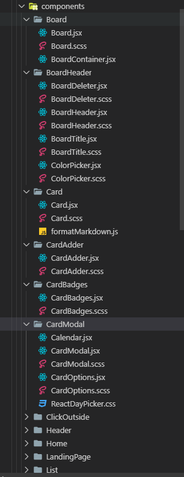

Structuring React Project¶
React doesn’t enforce any particular project structure. The good thing about this is that it allows you to make up a structure to suit your needs. The bad thing is that it is not possible to provide you an ideal structure that would work for every project.
Directory per Concept¶
Our Kanban application has this structure:

It’s enough for this purpose, but there are some interesting alternatives around:
File per concept - Perfect for small prototypes. You can split this up as you get more serious with your application.
Directory per component - It is possible to push components to directories of their own. Even though this is a heavier approach, there are some interesting advantages as we’ll see soon.
Directory per view - This approach becomes relevant once you want to introduce routing to your application.
Directory per Component¶
split our components to directories of their own
{kind=link}
There is no single right way to structure your project with React. That said, it is one of those aspects that is worth thinking about. Figuring out a structure that serves you well is worth it. A clear structure helps in the maintenance effort and makes your project more understandable to others.
You can evolve the structure as you go. Too heavy structure early on might just slow you down. As the project evolves, so should its structure. It’s one of those things that’s worth thinking about given it affects development so much.